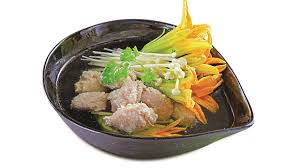

Kim châm, bông bí nấu giò sống

Nguyên liệu
- 200g giò sống
- 500g xương heo
- 10 đọt bông bí
- 300g nấm kim châm
- 1 ít ngò rí
- 2 thìa cà phê hạt nêm từ Thịt Thăn, Xương Ống và
Tủy - Bổ sung Vitamin A - Vitamin A
- Khẩu phần 4
- Chuẩn bị 10 phút
- Thực hiện 15 phút
Hướng dẫn thực hiện
- Xương heo rửa sạch. Cho vào nồi nước hầm lấy nước dùng, nêm ít muối,
lược lại nước
- Giò sống quết dai với 1 thìa cà phê hạt nêm từ Thịt Thăn, Xương Ống và
Tủy - Bổ sung Vitamin A. Bông bí rửa sạch, nhồi giò sống vào bông bí. Nấm
kim châm cắt gốc rửa sạch.
- Nấu sôi nước dùng, cho bông bí nhồi giò sống vào, để sôi lại, cho tiếp
nấm kim châm vào nấu thêm khoảng 10 phút, nêm hạt nêm từ Thịt Thăn, Xương
Ống và Tủy - Bổ sung Vitamin A vào, nếm vừa ăn, tắt bếp.
- Cho canh ra tô, trang trí với ít ngò rí, dùng nóng.